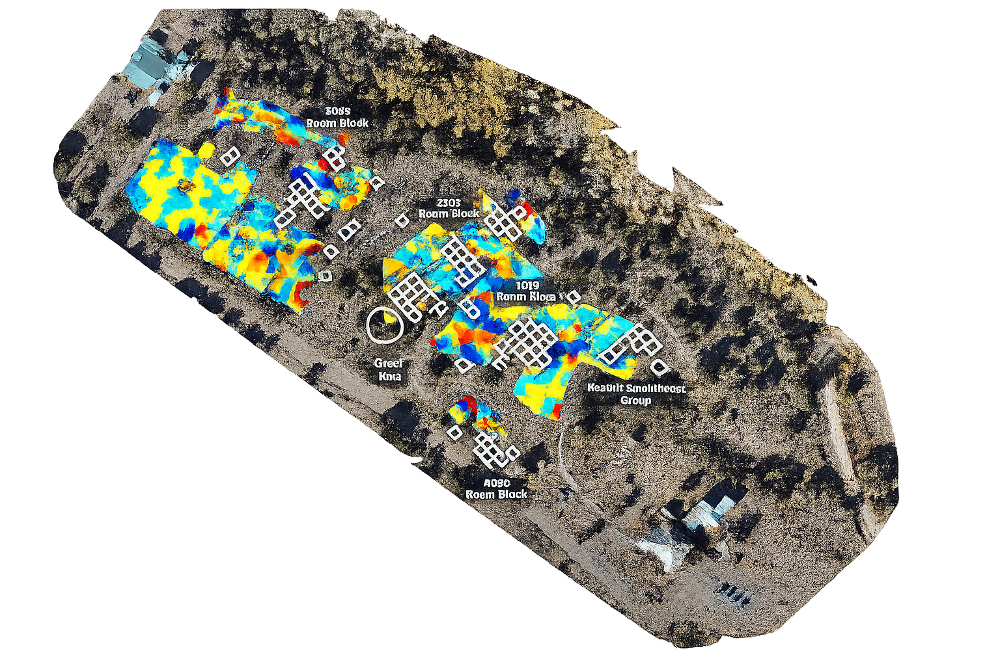
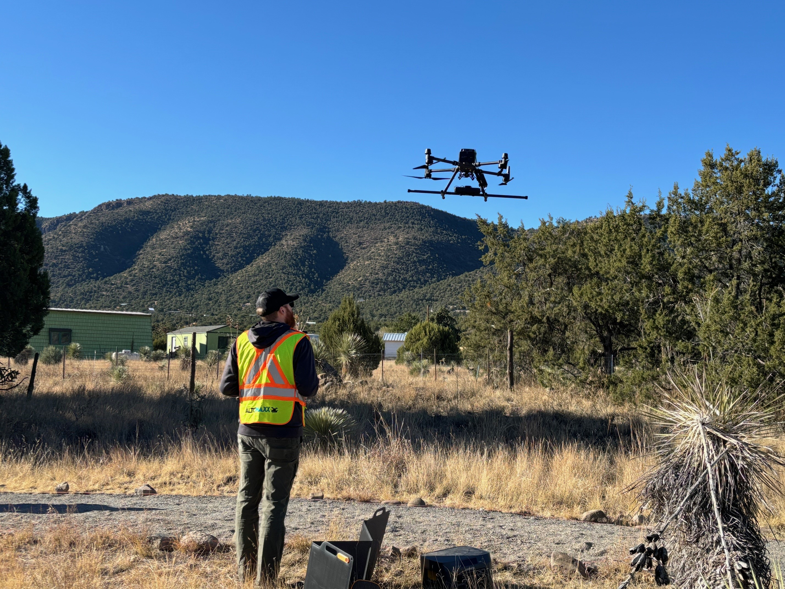
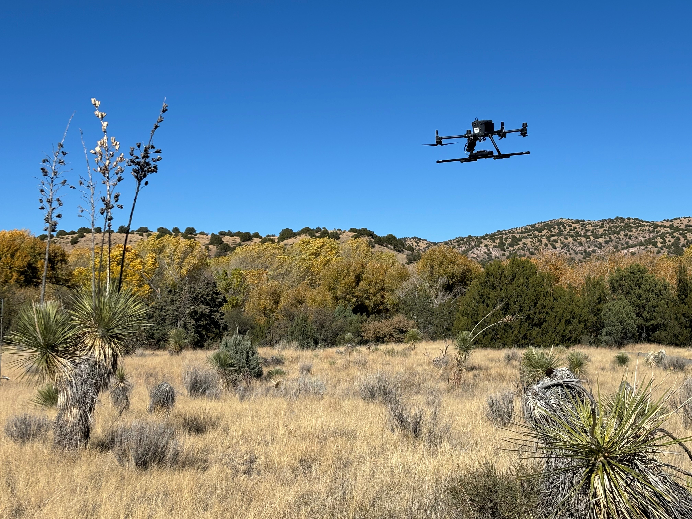

MIMBRES, NEW MEXICO— The Mimbres Cultural Heritage Site is a nonprofit educational organization that uses a 19th century homestead as a museum and headquarters for the Mattocks Ruin Mimbres Culture Archaeological Site. The Mattocks Ruin was the 4th site selected for the Cultural SITEs project, with scanning completed in November 2024. The site preserves the material culture of the Mimbres people, a branch of the larger Mogollon civilization that occupied southwestern New Mexico and southeastern Arizona between approximately 850 and 1000 AD. The Mogollon are among the most distinctive prehistoric cultures of the American Southwest, recognized for their finely crafted pottery, pueblo architecture and mural traditions.
The first excavation of the Mattocks Ruin uncovered an extensive collection of Mimbres pottery that was later distributed among several research institutions, while the second excavation documented pueblo room blocks, pit houses and associated structures before the site was once again backfilled. Today the Mimbres Cultural Heritage Site remains open to the public, where interpretive models and walking trails help visitors visualize the buried archaeological remains.


Given that the pueblo structures at the Ruin lie entirely underground, Cultural SITEs identified this as an appropriate site to test the capabilities of ground-penetrating radar (GPR) and magnetometry for subterranean data collection. The SITEs team partnered with Altomaxx, a professional drone services company specializing in drone-mounted magnetometry and GPR sensors.
The director of the Mimbres Cultural Heritage Site noted that the previous archaeological excavations had not extended north of the Mattocks Ruin, although researchers had long speculated that additional Mimbres pueblo structures might continue in that direction. Because the surrounding land is privately owned and includes an active residence, excavation is not a practical option, making remote sensing an attractive non-invasive alternative.
The team first conducted magnetometry surveys followed by GPR scans over the known Mattocks Ruin as a control area. The resulting data closely matched maps produced during the second excavation, confirming the reliability of the sensing technologies. When surveys moved onto the adjacent private property, however, dense vegetation and environmental conditions interfered with the sensors, preventing meaningful penetration below the surface. Although these surveys did not reveal additional archaeological remains, the work successfully demonstrated both the capabilities and limitations of geophysical investigation and informed future SITEs field strategies.
In addition to the GPR and magnetometry scans, the SITEs team documented two historic buildings using Matterport technology: the Gooch House, which serves as the museum and visitor center, and the Wood House, a former doctor’s residence now used by visiting researchers.
{kind=link}
{kind=link}
{kind=link}
{kind=link}
{kind=link}